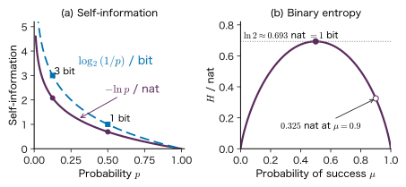
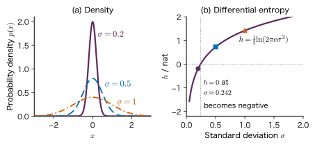
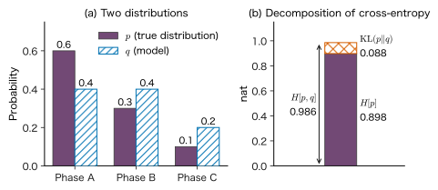
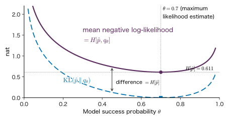
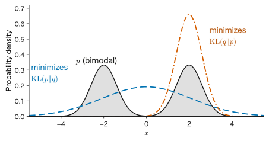
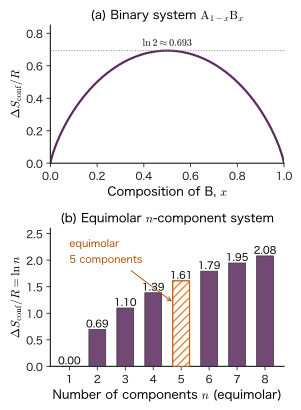

Chapter 5Information, Entropy, and the KL Divergence — Measuring the Difference Between Distributions
- When we train a classifier that identifies the crystal phase from an XRD pattern, why do we use as the loss function not the squared error but “the negative of the logarithm of the probability assigned to the correct phase” (the cross-entropy)?
- Can we express with a single number how far the model's predictive distribution deviates from the true distribution? May that number be called the “distance” between the two distributions?
- Is the “entropy” of machine learning the same thing as the entropy of statistical mechanics (the “entropy” of high-entropy alloys)?
Before measuring the XRD of a powder sample, suppose there are eight candidate crystal phases and all of them seem about equally likely. By asking three yes-or-no questions, such as “Is it one of phases 1–4?”, “Is it one of phases 1–2?”, and “Is it phase 1?”, we can always find out which phase it is ($2^{3}=8$). Conversely, if we already know from the start that “it is almost certainly phase 1,” the measurement gains us almost nothing. The magnitude of the “surprise” we feel on learning the outcome is larger the smaller the probability of that outcome. We call this quantity of surprise the information content, and we call its average the entropy.
In this chapter we begin with why the self-information $-\ln p(x)$ takes the form of a logarithm, and then define the entropy $H[p]$, the differential entropy of a continuous variable, and the cross-entropy and the KL divergence (Kullback–Leibler divergence, the magnitude of the deviation between distributions), which measure the difference between two distributions. We then show that “minimizing the KL divergence between the data distribution and the model distribution” is the same as the maximum likelihood estimation of Chapter 4. This is what the cross-entropy loss for classification (Chapter 9) and the loss for GPT's next-token prediction (Chapter 26) really are. In the latter half we treat how the direction of the KL changes the approximation, the mutual information that measures the strength of dependence between variables, the correspondence and differences with the Gibbs entropy of statistical mechanics, and the configurational entropy of alloys.
- Derive the self-information $-\ln p$ from the requirement that “the information content of independent events adds,” and convert between nats and bits.
- Compute the entropy of a discrete distribution by hand and prove that it is maximal for the uniform distribution.
- Derive the differential entropy $\tfrac12\ln(2\pi e\sigma^{2})$ of the Gaussian distribution, and explain that it can be negative and that its value changes with the choice of units.
- Derive $H[p,q]=H[p]+\KL(p\,\|\,q)$ and $\KL(p\,\|\,q)\ge0$ one line at a time, and show numerically that the KL is asymmetric.
- Derive that minimizing the KL with respect to the empirical distribution is the same as maximum likelihood estimation, and explain the cross-entropy loss for classification from this standpoint.
- Compute the mutual information from a table of the joint distribution, and show that it is 0 when the variables are independent.
- Derive that maximizing the entropy with the mean energy fixed yields the canonical distribution, and state the difference between Shannon's entropy and the entropy of thermodynamics.
- Derive the configurational entropy of ideal mixing $-R\sum_i x_i\ln x_i$ from the number of states, and compute that it equals $R\ln 5$ for an equimolar five-component system.
Sections for the introductory route: 5.1, 5.2, 5.4, 5.5, 5.11. Sections marked “Detailed Route” may be skipped on a first reading.
5.1 Self-Information — Measuring the Size of a Surprise
5.1.1 What we want to do
Suppose there are four candidate phases (A, B, C, D), and that, from past synthesis experience, their probabilities are $1/2$, $1/4$, $1/8$, and $1/8$, respectively. Let us try to determine the result of a measurement by asking yes/no questions. If we ask “Is it A?”, “Is it B?”, “Is it C?” in order, starting from the most likely phase A, then we know the answer after one question for A, after two questions for B, and after three questions for C or D (Figure 5.1).
Lining these numbers up with the probabilities, A (probability $1/2=2^{-1}$) takes one question, B ($1/4=2^{-2}$) takes two, and C and D ($1/8=2^{-3}$) take three; in every case
$$ \text{number of questions needed}=\log_{2}\frac{1}{p} $$holds. The smaller the probability of an outcome, the more questions learning it saves us. In other words, the smaller the probability of an outcome, the greater the “surprise” and the more information it brings. We want to define this quantity for general probabilities.
5.1.2 Where the form of the logarithm comes from
Suppose an event of probability $p$ has occurred. We require the “information content” $h$ gained on learning this to have the following three properties.
- $h$ is a function $h(p)$ determined by the probability $p$ ($0\lt p\le1$) alone, and it is larger the smaller $p$ is (monotone decreasing).
- Learning that an event that is certain to occur ($p=1$) has occurred gives no information: $h(1)=0$.
- The information content of two independent events is additive: if an event of probability $p$ and an event of probability $q$ are independent, then the probability that both occur is $pq$ (Chapter 2, Section 2.3), and $h(pq)=h(p)+h(q)$.
The third property is the natural demand that the information gained on learning the phases of two independent samples be the sum of the two separate pieces of information. These three properties force the form of $h$ to be a logarithm.
Derivation: The only functions satisfying the requirements are $-c\ln p$
Change variables to $p=e^{-u}$ ($u=-\ln p\ge0$) and let $g(u)\equiv h(e^{-u})$. The smaller $p$ is, the larger $u$ is, so Requirement 1 says that $g$ is monotone increasing, and Requirement 2 says that $g(0)=h(1)=0$. Putting $p=e^{-u}$ and $q=e^{-v}$ in Requirement 3, we have $pq=e^{-(u+v)}$, so
$$ g(u+v)=g(u)+g(v)\qquad(u,v\ge0). $$(i) Integer multiples: Putting $v=u$ gives $g(2u)=2g(u)$. Repeating this, for every positive integer $n$ we get $g(nu)=n\,g(u)$.
(ii) Rational multiples: For a positive integer $m$, writing $u=m\cdot(u/m)$ and applying (i), we get $g(u)=m\,g(u/m)$, that is, $g(u/m)=g(u)/m$. Combining this with (i), for every positive rational number $r=n/m$ we obtain $g(ru)=r\,g(u)$.
(iii) Extension to real numbers: Let $c\equiv g(1)$. By (ii), $g(r)=cr$ for every positive rational number $r$. For any real number $u\gt0$, take rational numbers $r_1\lt u\lt r_2$ approaching $u$ from the left and from the right. Since $g$ is monotone increasing, $cr_1=g(r_1)\le g(u)\le g(r_2)=cr_2$. Letting $r_1,r_2\to u$ gives $g(u)=cu$.
Thus $g(u)=cu$, and returning to the original variable gives $h(p)=g(-\ln p)=-c\ln p$. Since $g$ is an increasing function, $c\gt0$.
∎
The constant $c$ corresponds to the choice of the base of the logarithm (that is, the unit of information). Taking $c=1$ gives the natural logarithm, and taking $c=1/\ln 2$ gives $-\ln p/\ln 2=-\log_{2}p$.
Definition 5.1: Self-information
When a discrete random variable that follows a probability mass function $p(x)$ takes the value $x$, we define its self-information as follows:
\begin{equation} h(x)=-\ln p(x)=\ln\frac{1}{p(x)} \label{eq:5-selfinfo} \end{equation}The unit measured with the natural logarithm is called the nat, and the unit measured by $-\log_{2}p(x)$ is called the bit. Since $\log_{2}p=\ln p/\ln 2$,
$$ \begin{aligned} 1\ \mathrm{bit}&=\ln 2\ \mathrm{nat}\approx0.693\ \mathrm{nat},\\ 1\ \mathrm{nat}&=\frac{1}{\ln 2}\ \mathrm{bit}\approx1.443\ \mathrm{bit}. \end{aligned} $$This book uses the natural logarithm (nat) as the default. Differentiation is simple with it, and it connects directly to the log-likelihood $\ln p(\data\mid\theta)$ of maximum likelihood estimation (Chapter 4, Section 4.2). We use bits only when base 2 is the natural choice, as with “the number of yes/no questions” or memory capacity. Figure 5.2(a) plots $h=-\ln p$ and $\log_{2}(1/p)$. As $p\to0$ the information content grows without bound, and at $p=1$ it is 0.
Example 5.1: Information content upon learning the phase
(1) Suppose there are eight candidate phases, each with probability $1/8$. Find the self-information, in nats and in bits, when the measurement reveals the phase. (2) Find the self-information for phase A, which has probability $1/2$, and for a rare phase with probability $1/32$. (3) Using the result of (1), find the self-information when the phases of two mutually independent samples (each with eight equally likely candidates) are both learned, and compare it with the value computed directly.
Solution. (1) By Eq. \eqref{eq:5-selfinfo}, $h$ $=-\ln(1/8)$ $=\ln 8$ $=3\ln 2$ $\approx2.079\ \mathrm{nat}$. In bits, $\log_{2}8=3\ \mathrm{bit}$. This corresponds to three yes/no questions.
(2) For phase A, $\ln 2$ $\approx0.693\ \mathrm{nat}$ $=1\ \mathrm{bit}$. For the rare phase, $\ln 32$ $=5\ln2$ $\approx3.466\ \mathrm{nat}$ $=5\ \mathrm{bit}$. When the probability is multiplied by $1/16$, the information content increases by $\ln 16=4\ \mathrm{bit}$.
(3) Because the samples are independent, the probability of the pair of phases is $(1/8)\times(1/8)=1/64$. Computing directly, $-\ln(1/64)$ $=\ln 64$ $=6\ln2$ $\approx4.159\ \mathrm{nat}$ $=6\ \mathrm{bit}$. On the other hand, the sum of the values from (1) is $2\times3=6\ \mathrm{bit}$, which agrees. This is exactly Requirement 3.
5.2 Entropy — The Average Surprise
5.2.1 Definition
Before a measurement, we do not know which result will occur. We therefore estimate the information content obtained by the measurement through its average. Entropy is the expectation (expected value) of the self-information $h(x)$ (Chapter 2, Section 2.5).
Definition 5.2: Entropy
Let a discrete random variable $x$ take $K$ values, with probability mass function $p(x)$. Then
\begin{equation} \begin{aligned} H[p]&=\Ex_{p}\bigl[-\ln p(x)\bigr]\\ &=-\sum_{x}p(x)\ln p(x) \end{aligned} \label{eq:5-entropy} \end{equation}is called the entropy of the distribution $p$. Its unit is the nat (the bit if we use $\log_{2}$). When we want to emphasize the name of the random variable, we also write $H[x]$. A term for a value with $p(x)=0$ is set to 0 by the following convention.
$$ 0\ln 0\equiv0 . $$The convention $0\ln0=0$ comes from a limit. The limit of $t\ln t$ as $t\to+0$ is the indeterminate form “$0\times(-\infty)$”, so we rewrite it as $t\ln t=\dfrac{\ln t}{1/t}$ and use l'Hôpital's rule:
$$ \lim_{t\to+0}\frac{\ln t}{1/t}=\lim_{t\to+0}\frac{1/t}{-1/t^{2}}=\lim_{t\to+0}(-t)=0 . $$A value that cannot occur does not contribute to the average surprise.
5.2.2 Properties
- Nonnegative: Since $0\le p(x)\le1$, we have $\ln p(x)\le0$, so each term satisfies $-p(x)\ln p(x)\ge0$. Hence $H[p]\ge0$.
- It is 0 only when the outcome is certain: If $H[p]=0$, then every term is 0, so for each $x$ either $p(x)=0$ or $p(x)=1$. Since the probabilities sum to 1, exactly one value has probability 1 and all the others have probability 0.
- The maximum is attained by the uniform distribution: For a distribution taking $K$ values, $H[p]\le\ln K$, with equality if and only if $p(x)=1/K$ (the uniform distribution). The value for the uniform distribution, $H=-\sum_{x}\frac1K\ln\frac1K=\ln K$, can be computed directly. The proof that this is the maximum is given in two lines in Section 5.4 using the KL divergence (Theorem 5.2 in Section 5.4).
The simplest example is the Bernoulli distribution taking two values, $p(x=1)=\mu$ and $p(x=0)=1-\mu$. Its entropy is called the binary entropy function.
\begin{equation} \begin{aligned} H(\mu)&=-\mu\ln\mu\\ &\quad-(1-\mu)\ln(1-\mu) \end{aligned} \label{eq:5-binary} \end{equation}Here $0\le\mu\le1$. We locate the maximum by differentiation. Using $\diff{}{\mu}(\mu\ln\mu)=\ln\mu+1$, we get
$$ \begin{aligned} \diff{H}{\mu}&=-(\ln\mu+1)+\bigl(\ln(1-\mu)+1\bigr)\\ &=\ln\frac{1-\mu}{\mu},\\ \frac{\dd^{2}H}{\dd\mu^{2}}&=-\frac{1}{\mu}-\frac{1}{1-\mu}=-\frac{1}{\mu(1-\mu)}\lt0 . \end{aligned} $$The first derivative is 0 when $(1-\mu)/\mu=1$, that is, when $\mu=1/2$, and since the second derivative is negative, this is a maximum. The maximum value is $H(1/2)$ $=\ln2$ $\approx0.693\ \mathrm{nat}$ $=1\ \mathrm{bit}$ (Figure 5.2(b)). For a process with success rate 0.9, $H(0.9)\approx0.325\ \mathrm{nat}$ only, and the outcome is already largely known before we look.

5.2.3 How to read entropy — the average number of questions and the “effective number of choices”
In the example of Figure 5.1, the average number of questions was 1.75. This coincides with the entropy measured in bits (Example 5.2). In general, when we communicate an outcome one at a time by yes/no questions (or by a code of 0s and 1s), it is known that the average length of the best method is at least the entropy measured in bits and can be made shorter than the entropy plus 1 bit (Shannon's source coding theorem; in this book we only state the result and leave the proof to the textbook by Cover & Thomas in the references). Entropy is the quantity that expresses “how much, on average, we are in doubt until we learn the outcome.”
As another way of reading it, consider $\exp(H[p])$. For a uniform distribution on $K$ values, $\exp(\ln K)=K$, so $\exp(H)$ tells us “how many choices a uniform distribution with the same entropy would have.” We call this the effective number of choices. Perplexity, used in evaluating language models (Chapter 26, Section 26.4), applies this idea to “how many choices, on average, the model is torn between for the next token.”
5.2.4 The entropy of independent variables is additive
For two discrete random variables $x,y$, the entropy of the joint distribution $p(x,y)$ is called the joint entropy $H[x,y]=-\sum_{x}\sum_{y}p(x,y)\ln p(x,y)$. If $x$ and $y$ are independent, then $p(x,y)=p(x)p(y)$, so
$$ \begin{aligned} H[x,y]&=-\sum_{x}\sum_{y}p(x)p(y)\\ &\qquad\times\bigl\{\ln p(x)+\ln p(y)\bigr\}\\ &=-\sum_{x}p(x)\ln p(x)\underbrace{\sum_{y}p(y)}_{=1}\\ &\quad-\sum_{y}p(y)\ln p(y)\underbrace{\sum_{x}p(x)}_{=1}\\ &=H[x]+H[y]. \end{aligned} $$Requirement 3 on self-information (additivity for independent events) is preserved after taking the average. What changes when the variables are not independent is treated in Section 5.7.
Example 5.2: The entropy of four phases
For the distribution $p=(1/2,\,1/4,\,1/8,\,1/8)$ of Figure 5.1: (1) Find the entropy in bits and in nats, and compare it with the average number of questions. (2) Compare it with the entropy when the four phases are equally probable. (3) Find the effective number of choices $\exp(H)$.
Solution. (1) Computing in bits, $-\log_{2}(1/2)=1$, $-\log_{2}(1/4)=2$, and $-\log_{2}(1/8)=3$, so
$$ \begin{aligned} H&=\tfrac12\cdot1+\tfrac14\cdot2+\tfrac18\cdot3+\tfrac18\cdot3\\ &=0.5+0.5+0.375+0.375=1.75\ \mathrm{bit}. \end{aligned} $$Converting to nats gives $1.75\times\ln2$ $\approx1.75\times0.6931$ $\approx1.213\ \mathrm{nat}$. This agrees with the average number of questions, 1.75.
(2) For equal probabilities, $H$ $=\log_{2}4$ $=2\ \mathrm{bit}$ $=\ln4$ $\approx1.386\ \mathrm{nat}$. The skewed distribution has 0.25 bit less entropy. To the extent that we already know in advance that “it is probably A,” the measurement gives us less information.
(3) $\exp(1.213)\approx3.36$. Even though there are four candidates, because of the skew we are effectively in doubt among about 3.4 choices.
5.3 Differential Entropy of Continuous VariablesDetailed Route
5.3.1 Definition and the value for the Gaussian distribution
For a continuous random variable, we define a quantity of the same form by replacing the sum with an integral.
Definition 5.3: Differential entropy
For a continuous random variable $x$ with probability density function $p(x)$,
\begin{equation} h[p]=-\int p(x)\ln p(x)\,\dd x \label{eq:5-diffent} \end{equation}is called the differential entropy. The integral is taken over the range where $p(x)\gt0$.
We compute the differential entropy of the Gaussian distribution $p(x)=\Normal(x\mid\mu,\sigma^{2})=\dfrac{1}{\sqrt{2\pi\sigma^{2}}}\exp\!\left(-\dfrac{(x-\mu)^{2}}{2\sigma^{2}}\right)$ (Chapter 3, Section 3.5). First, taking the logarithm gives
$$ \ln p(x)=-\frac12\ln(2\pi\sigma^{2})-\frac{(x-\mu)^{2}}{2\sigma^{2}} . $$Eq. \eqref{eq:5-diffent} is the expectation of $-\ln p(x)$, so using the linearity of expectation and $\Ex[(x-\mu)^{2}]=\sigma^{2}$ (the definition of variance), we obtain
$$ \begin{aligned} h[p]&=\Ex\!\left[\frac12\ln(2\pi\sigma^{2})+\frac{(x-\mu)^{2}}{2\sigma^{2}}\right]\\ &=\frac12\ln(2\pi\sigma^{2})+\frac{\sigma^{2}}{2\sigma^{2}}=\frac12\ln(2\pi\sigma^{2})+\frac12 . \end{aligned} $$Combining the terms with $\tfrac12=\tfrac12\ln e$, we obtain the following result.
\begin{equation} h\bigl[\Normal(\mu,\sigma^{2})\bigr]=\frac12\ln\bigl(2\pi e\,\sigma^{2}\bigr) \label{eq:5-gauss-ent} \end{equation}It does not depend on the mean $\mu$; it is determined by the spread $\sigma$ alone. As another simple example, for the uniform distribution on the interval $[a,b]$ we have $p(x)=1/(b-a)$, so $h$ $=-\int_{a}^{b}\frac{1}{b-a}\ln\frac{1}{b-a}\,\dd x$ $=\ln(b-a)$.
5.3.2 It can be negative, and its value changes with the scale
Eq. \eqref{eq:5-gauss-ent} is negative when $2\pi e\sigma^{2}\lt1$, that is, when $\sigma\lt1/\sqrt{2\pi e}\approx0.242$ (Figure 5.3). For the uniform distribution too, if the width satisfies $b-a\lt1$, then $\ln(b-a)\lt0$. The entropy of a discrete variable was always at least 0, but the differential entropy can be negative. This is because a density can exceed 1 (Chapter 2, Section 2.1), so $-\ln p(x)$ is negative in some places.
Moreover, the value changes when we change the scale (unit) of the variable. Let $y=cx$ ($c\ne0$ is a constant; for example, $c=1000$ in going from μm to nm). By the change-of-variables formula (Chapter 2, Section 2.6), $p_y(y)=p_x(y/c)/\abs{c}$. Substituting this and returning the integration variable to $x$ through $\dd y=\abs{c}\,\dd x$, we get
$$ \begin{aligned} h[p_y]&=-\int p_y(y)\ln p_y(y)\,\dd y\\ &=-\int\frac{p_x(x)}{\abs{c}}\Bigl\{\ln p_x(x)-\ln\abs{c}\Bigr\}\abs{c}\,\dd x\\ &=h[p_x]+\ln\abs{c}\int p_x(x)\,\dd x\\ &=h[p_x]+\ln\abs{c}. \end{aligned} $$In other words, the value of the differential entropy itself depends on the unit in which the variable is measured. Values can be compared in size only between the same variable in the same unit. The KL divergence and the mutual information, which we see later, are determined only by the ratio of two densities, so they have no such dependence on units (Section 5.4).

5.3.3 Relation to discrete entropy
If we divide a continuous variable into intervals of width $\Delta$ and discretize it, the probability of falling in interval $i$ is $P_i\approx p(x_i)\Delta$. The entropy of this discrete distribution is
$$ \begin{aligned} H_{\Delta}&=-\sum_{i}P_i\ln P_i\\ &\approx-\sum_{i}p(x_i)\Delta\bigl\{\ln p(x_i)+\ln\Delta\bigr\}\\ &\approx-\int p(x)\ln p(x)\,\dd x-\ln\Delta\underbrace{\int p(x)\,\dd x}_{=1}\\ &=h[p]-\ln\Delta \end{aligned} $$(we approximated the sum by an integral). As $\Delta\to0$ we have $-\ln\Delta\to+\infty$, so the discrete entropy diverges, and the differential entropy is not its limit. The differential entropy is what remains after subtracting the divergent part $-\ln\Delta$. For example, if we divide the standard Gaussian distribution ($h\approx1.419$) into intervals of width $0.1$, then $H_{\Delta}$ $\approx1.419+2.303$ $=3.722\ \mathrm{nat}$, and with width $0.01$ it becomes $6.024\ \mathrm{nat}$. This expresses the obvious fact that the finer we measure a continuous value, the more information is needed to communicate it.
Example 5.3: Differential entropy and units for a grain-size distribution
Suppose the grain size of a sintered body follows a Gaussian distribution with mean $1.5\ \mu\mathrm{m}$ and standard deviation $0.2\ \mu\mathrm{m}$ (a numerical example for teaching purposes). (1) Find the differential entropy when the grain size is measured in μm. (2) Find the value when it is measured in nm, and verify that the difference is $\ln1000$. (3) By how much does the differential entropy increase when the standard deviation is widened from $0.2\ \mu\mathrm{m}$ to $0.4\ \mu\mathrm{m}$? Does it depend on the unit?
Solution. (1) Split Eq. \eqref{eq:5-gauss-ent} as $\tfrac12\ln(2\pi e)+\ln\sigma$. We have $\tfrac12\ln(2\pi e)$ $=\tfrac12(\ln2\pi+1)$ $=\tfrac12(1.8379+1)$ $\approx1.4189$. Since $\sigma=0.2$, $\ln0.2\approx-1.6094$. Hence $h$ $\approx1.4189-1.6094$ $=-0.1905\ \mathrm{nat}$ (negative).
(2) In nm, $\sigma=200$ and $\ln200\approx5.2983$, so $h\approx1.4189+5.2983=6.7172\ \mathrm{nat}$. The difference is $6.7172-(-0.1905)$ $=6.9077$ $\approx\ln1000$ $=6.9078$, which agrees with $h[p_y]=h[p_x]+\ln\abs{c}$ ($c=1000$) in Section 5.3.2 (the discrepancy in the last digit is rounding).
(3) When $\sigma$ doubles, $\ln\sigma$ increases by $\ln2\approx0.693$. This is the same in any unit. Changing the unit adds the same $\ln\abs{c}$ to both values, so the difference does not depend on the unit.
5.4 Cross-Entropy and the KL Divergence
5.4.1 What we want to do — the loss from believing the wrong distribution
Suppose the true distribution is $p$, but we believe the distribution $q$. When the outcome $x$ occurs, the surprise we feel, measured with the distribution we believe, is $-\ln q(x)$. The outcomes, however, come out according to the true distribution $p$, so the average surprise is $\Ex_{p}[-\ln q(x)]$. Had we believed the correct distribution $p$, the average surprise would have been only $\Ex_{p}[-\ln p(x)]=H[p]$. The difference is “the loss from believing the wrong distribution,” and it expresses how large the difference between $p$ and $q$ is.
In the language of Figure 5.1: if we design the order of the questions (the code) to suit $q$ and then guess outcomes that actually follow $p$, the average number of questions is larger than the best possible value. Setting aside the effect of rounding the number of questions to an integer, that excess is the KL divergence defined next (the number of questions, if measured in bits).
5.4.2 Definition
Definition 5.4: Cross-entropy and the KL divergence
For two probability mass functions $p(x)$ and $q(x)$ on the same set of values,
\begin{equation} \begin{aligned} H[p,q]&=\Ex_{p}\bigl[-\ln q(x)\bigr]\\ &=-\sum_{x}p(x)\ln q(x) \end{aligned} \label{eq:5-ce} \end{equation}is called the cross-entropy of $q$ with respect to $p$, and
\begin{equation} \begin{aligned} \KL(p\,\|\,q)&=\Ex_{p}\!\left[\ln\frac{p(x)}{q(x)}\right]\\ &=\sum_{x}p(x)\ln\frac{p(x)}{q(x)} \end{aligned} \label{eq:5-kl} \end{equation}is called the KL divergence (Kullback–Leibler divergence, also called relative entropy) from $p$ to $q$. Its unit is the nat. By convention, a term with $p(x)=0$ is taken to be 0 ($0\ln(0/q)=0$), and if there is an $x$ with $p(x)\gt0$ but $q(x)=0$, we set $\KL(p\,\|\,q)=+\infty$. For continuous variables, replace the sum by an integral and let $p,q$ be probability density functions.
The relation between the two quantities follows just by splitting $\ln q=\ln p-\ln(p/q)$.
$$ \begin{aligned} H[p,q]&=-\sum_{x}p(x)\ln q(x)\\ &=-\sum_{x}p(x)\left\{\ln p(x)-\ln\frac{p(x)}{q(x)}\right\}\\ &=-\sum_{x}p(x)\ln p(x)+\sum_{x}p(x)\ln\frac{p(x)}{q(x)} . \end{aligned} $$The first term is $H[p]$ and the second term is $\KL(p\,\|\,q)$, so
The cross-entropy is the sum of “the uncertainty of the true distribution itself, $H[p]$” and “the loss from mistaking the distribution, $\KL(p\,\|\,q)$.” The term $H[p]$ cannot be changed however we choose $q$.
Unlike the differential entropy, the KL divergence of continuous variables does not depend on the scale of the variable. If $y=cx$, then $p_y(y)=p_x(x)/\abs{c}$ and $q_y(y)=q_x(x)/\abs{c}$, and in the ratio $p_y/q_y=p_x/q_x$ the factors $\abs{c}$ cancel (for a general one-to-one change of variables as well, the absolute value of the same Jacobian determinant multiplies both numerator and denominator, so they cancel).
5.4.3 The KL divergence is nonnegative — Gibbs's inequality
The proof uses just one inequality.
Math Tool: $\ln t\le t-1$
For $t\gt0$ we have $\ln t\le t-1$, with equality only when $t=1$.
Proof: Let $f(t)=t-1-\ln t$. Then $f'(t)=1-1/t$, and $f'\lt0$ (decreasing) for $0\lt t\lt1$, while $f'\gt0$ (increasing) for $t\gt1$. Hence $f$ attains its minimum $f(1)=0$ at $t=1$, and $f(t)\gt0$ for $t\ne1$. In terms of the graph, $\ln t$ lies below its tangent line $t-1$ at the point $(1,0)$.
Theorem 5.1: Gibbs's inequality
For any probability mass functions $p,q$ we have $\KL(p\,\|\,q)\ge0$, with equality only when $p(x)=q(x)$ for all $x$.
Proof
If there is an $x$ with $q(x)=0$ and $p(x)\gt0$, then $\KL=+\infty\gt0$, so below we assume there is no such $x$. The sum is taken only over the $x$ with $p(x)\gt0$ (because terms with $p(x)=0$ are 0). Write this set as $S$. We apply $\ln t\le t-1$ with $t=q(x)/p(x)$ to the quantity with its sign reversed.
$$ \begin{aligned} -\KL(p\,\|\,q)&=\sum_{x\in S}p(x)\ln\frac{q(x)}{p(x)}\\ &\le\sum_{x\in S}p(x)\left(\frac{q(x)}{p(x)}-1\right)\\ &=\sum_{x\in S}q(x)-\sum_{x\in S}p(x)\\ &=\sum_{x\in S}q(x)-1\ \le\ 1-1=0 . \end{aligned} $$The last inequality holds because the probabilities of $q$ sum to 1 over everything, so the sum over $S$ alone is at most 1. Therefore $\KL(p\,\|\,q)\ge0$.
Condition for equality: both of the two inequalities must be equalities. The first requires $q(x)/p(x)=1$ for every $x$ in $S$, and the second requires $\sum_{x\in S}q(x)=1$ ($q=0$ outside $S$). Both hold together only when $p(x)=q(x)$ for all $x$.
∎
Combined with Eq. \eqref{eq:5-ce-decomp}, this gives $H[p,q]\ge H[p]$: the cross-entropy attains its minimum $H[p]$ when $q=p$. The KL divergence of continuous variables is also nonnegative, by the same proof with sums replaced by integrals.
5.4.4 The distributions that maximize entropy
From Gibbs's inequality, the properties announced in Section 5.2 follow immediately.
Theorem 5.2: Distributions that maximize entropy
(a) For a discrete distribution taking $K$ values, $H[p]\le\ln K$, with equality only for the uniform distribution $p(x)=1/K$.
(b) For a continuous distribution with variance $\sigma^{2}$, $h[p]\le\tfrac12\ln(2\pi e\sigma^{2})$, with equality only for the Gaussian distribution.
Proof
(a) Let $u(x)=1/K$ be the uniform distribution, and compute the KL divergence.
$$ \begin{aligned} \KL(p\,\|\,u)&=\sum_{x}p(x)\ln\frac{p(x)}{1/K}\\ &=\sum_{x}p(x)\ln p(x)+\ln K\sum_{x}p(x)\\ &=-H[p]+\ln K . \end{aligned} $$By Theorem 5.1 the left-hand side is nonnegative, so $H[p]\le\ln K$. Equality holds only when $p=u$.
(b) (For readers of the detailed route) Let $\mu$ be the mean of $p$, and compute the KL divergence with the Gaussian distribution $g(x)=\Normal(x\mid\mu,\sigma^{2})$ having the same mean and variance. The expectation with respect to $p$ of $-\ln g(x)$ $=\tfrac12\ln(2\pi\sigma^{2})$ $+(x-\mu)^{2}/(2\sigma^{2})$ is, since $\Ex_{p}[(x-\mu)^{2}]=\sigma^{2}$, equal to $\tfrac12\ln(2\pi\sigma^{2})+\tfrac12$ $=\tfrac12\ln(2\pi e\sigma^{2})$. Hence
$$ \begin{aligned} \KL(p\,\|\,g)&=\int p\ln p\,\dd x-\int p\ln g\,\dd x\\ &=-h[p]+\frac12\ln(2\pi e\sigma^{2})\ \ge\ 0 . \end{aligned} $$Equality holds only when $p=g$.
∎
Part (a) says that “if we know nothing, the uniform distribution has the greatest uncertainty,” and (b) says that “if we know only the mean and variance, the Gaussian distribution has the greatest uncertainty.” The latter is cited as one of the reasons for using the Gaussian distribution as a model of measurement error (“a distribution that assumes nothing beyond what we know”; this is the maximum-entropy idea of Section 5.8).
5.4.5 A numerical look — the KL divergence is asymmetric

Example 5.4: Computing the cross-entropy and the KL divergence for a distribution over three phases
Under a certain synthesis condition, the true distribution of the phases obtained is $p=(0.6,\,0.3,\,0.1)$ (phases A, B, C), and the model's prediction is $q=(0.4,\,0.4,\,0.2)$ (a numerical example for teaching purposes). Find (1) $H[p]$, (2) $H[p,q]$, and (3) $\KL(p\,\|\,q)$, and verify Eq. \eqref{eq:5-ce-decomp}. (4) Find $\KL(q\,\|\,p)$ and compare it with (3).
Solution. The logarithms we need are $\ln0.6=-0.5108$, $\ln0.3=-1.2040$, $\ln0.1=-2.3026$, $\ln0.4=-0.9163$, and $\ln0.2=-1.6094$.
(1) $H[p]$ $=0.6\times0.5108$ $+0.3\times1.2040$ $+0.1\times2.3026$ $=0.3065+0.3612+0.2303$ $=0.8979\ \mathrm{nat}$.
(2) $H[p,q]$ $=0.6\times0.9163$ $+0.3\times0.9163$ $+0.1\times1.6094$ $=0.5498+0.2749+0.1609$ $=0.9856\ \mathrm{nat}$.
(3) Compute $p\ln(p/q)$ term by term: $0.6\ln1.5=0.6\times0.4055=0.2433$, $0.3\ln0.75=0.3\times(-0.2877)=-0.0863$, $0.1\ln0.5=0.1\times(-0.6931)=-0.0693$. The sum is $\KL(p\,\|\,q)=0.0877\ \mathrm{nat}$. Even though some terms are negative, the sum is nonnegative (Theorem 5.1). We have $H[p]+\KL=0.8979+0.0877=0.9856$, which agrees with (2).
(4) $\KL(q\,\|\,p)$ $=0.4\ln\frac{0.4}{0.6}$ $+0.4\ln\frac{0.4}{0.3}$ $+0.2\ln\frac{0.2}{0.1}$ $=0.4\times(-0.4055)$ $+0.4\times0.2877$ $+0.2\times0.6931$ $=-0.1622+0.1151+0.1386$ $=0.0915\ \mathrm{nat}$. This differs from the $0.0877$ in (3).
In Example 5.4 the difference was small, but when the distributions are strongly skewed the asymmetry becomes clear.
Illustration 5.1: KL divergence between a skewed distribution and the uniform distribution
Let $p=(0.9,\,0.1)$ and $q=(0.5,\,0.5)$. Then
$$ \begin{aligned} \KL(p\,\|\,q)&=0.9\ln\frac{0.9}{0.5}+0.1\ln\frac{0.1}{0.5}\\ &=0.5290-0.1609\\ &=0.3681\ \mathrm{nat},\\ \KL(q\,\|\,p)&=0.5\ln\frac{0.5}{0.9}+0.5\ln\frac{0.5}{0.1}\\ &=-0.2939+0.8047\\ &=0.5108\ \mathrm{nat}. \end{aligned} $$$\KL(q\,\|\,p)$ is the larger because $q$ places as much as 0.5 probability on a value that $p$ regards as almost never occurring (probability 0.1). The weights of $\ln(q/p)$ are given by $q$, so it is severe on “$q$ placing probability where $p$ is small.” This property becomes important in Section 5.6.
5.5 KL Minimization and Maximum Likelihood — What the Cross-Entropy Loss Really Is
5.5.1 The empirical distribution
Suppose the data $\data=\{x_n\}_{n=1}^{N}$ take discrete values, and write $N_x$ for the number of times the value $x$ appears ($\sum_{x}N_x=N$). The relative frequency within the data,
\begin{equation} \hat{p}(x)=\frac{N_x}{N} \label{eq:5-empirical} \end{equation}is called the empirical distribution. It is the data viewed as a “stand-in for the true distribution.” The model distribution is denoted $q_{\bm{\theta}}(x)$, with parameter $\bm{\theta}$.
5.5.2 Minimizing the KL divergence from the empirical distribution = maximum likelihood estimation
Split the KL divergence from the empirical distribution to the model using Eq. \eqref{eq:5-ce-decomp}.
$$ \KL(\hat{p}\,\|\,q_{\bm{\theta}})=H[\hat{p},q_{\bm{\theta}}]-H[\hat{p}] . $$$H[\hat{p}]$ is determined by the data alone and does not depend on $\bm{\theta}$. Let us rewrite the cross-entropy as a sum over the data. Substitute $\hat{p}(x)=N_x/N$, and use the fact that “the value $x$ appears $N_x$ times” to turn the sum over values into a sum over data points.
$$ \begin{aligned} H[\hat{p},q_{\bm{\theta}}]&=-\sum_{x}\frac{N_x}{N}\ln q_{\bm{\theta}}(x)\\ &=-\frac1N\sum_{x}\underbrace{N_x\ln q_{\bm{\theta}}(x)}_{\text{value }x\text{: }N_x\text{ points}}\\ &=-\frac1N\sum_{n=1}^{N}\ln q_{\bm{\theta}}(x_n) . \end{aligned} $$The last expression is the log-likelihood $\ln p(\data\mid\bm{\theta})$ $=\sum_{n}\ln q_{\bm{\theta}}(x_n)$ for independent data (Chapter 2, Section 2.7, Chapter 4, Section 4.2) multiplied by $-1/N$; that is, it is the average negative log-likelihood. Putting this together gives the following equation.
The first term on the right-hand side is the average negative log-likelihood ($=H[\hat{p},q_{\bm{\theta}}]$), and the second term is a constant independent of $\bm{\theta}$. Therefore the following three procedures give the same $\bm{\theta}$.
- Minimize the KL divergence $\KL(\hat{p}\,\|\,q_{\bm{\theta}})$ from the empirical distribution.
- Minimize the cross-entropy $H[\hat{p},q_{\bm{\theta}}]$ (= the average negative log-likelihood).
- Maximize the likelihood $p(\data\mid\bm{\theta})$ (maximum likelihood estimation).
In Chapter 4 we described maximum likelihood estimation as “choosing the value that best explains the data.” In the language of this section, it means “choosing the model distribution closest to the distribution of the data, as measured by the KL divergence.”

Figure 5.5 shows the Bernoulli example with 7 successes in 10 trials ($\mu_{\mathrm{ML}}=m/N$ in Chapter 4). Differentiating $H[\hat{p},q_{\theta}]$ $=-(0.7\ln\theta+0.3\ln(1-\theta))$ with respect to $\theta$ and setting the derivative to 0 gives $-0.7/\theta+0.3/(1-\theta)=0$, that is, $\theta=0.7$, which agrees with the result of Chapter 4.
For a categorical distribution (with $K$ possible values), the maximum likelihood estimate can be found without differentiation. If $q$ may be any distribution, then by Theorem 5.1 $\KL(\hat{p}\,\|\,q)$ attains its minimum value 0 at $q=\hat{p}$, so the maximum likelihood estimate is the relative frequency $q(x)=N_x/N$ itself.
Advanced Topic: With more data, we are minimizing the KL divergence from the true distribution
Suppose the data are drawn independently from the true distribution $p$. By the law of large numbers (Chapter 2, Section 2.8), as $N\to\infty$ the average negative log-likelihood approaches the expectation:
$$ \begin{aligned} &-\frac1N\sum_{n=1}^{N}\ln q_{\bm{\theta}}(x_n)\\ &\longrightarrow\ \Ex_{p}\bigl[-\ln q_{\bm{\theta}}(x)\bigr]\\ &\quad=H[p]+\KL(p\,\|\,q_{\bm{\theta}}). \end{aligned} $$Therefore, with plenty of data, maximum likelihood estimation approaches the $\bm{\theta}$ that minimizes the KL divergence from the true distribution $p$ to the model. Even if the true distribution is not contained in the family of models (that is, even if the model is wrong), maximum likelihood estimation is looking for “the member of the family that is closest in the sense of the KL divergence.” The same conclusion can be stated for continuous variables, too, in this form, without writing the empirical distribution explicitly.
5.5.3 The cross-entropy loss for classification
In classification, we train a model that outputs, for an input $\bm{x}_n\in\R^{D}$, a conditional distribution $q_{\bm{\theta}}(k\mid\bm{x}_n)$ over $K$ classes. We represent the correct label by a one-hot vector (a vector whose component for the correct class alone is 1 and whose other components are 0) $\bm{y}_n$ $=(y_{n1},\dots,y_{nK})^{\tp}\in\{0,1\}^{K}$, and regard it as “the empirical distribution at the input $\bm{x}_n$.” Its cross-entropy is
\begin{equation} \begin{aligned} L_n(\bm{\theta})&=H\bigl[\bm{y}_n,q_{\bm{\theta}}(\cdot\mid\bm{x}_n)\bigr]\\ &=-\sum_{k=1}^{K}y_{nk}\ln q_{\bm{\theta}}(k\mid\bm{x}_n)\\ &=-\ln q_{\bm{\theta}}(\text{correct}\mid\bm{x}_n) \end{aligned} \label{eq:5-ce-loss} \end{equation}(because the vector is one-hot, only the term for the correct class survives in the sum). The average of this over the data, $\frac1N\sum_{n}L_n$, is the cross-entropy loss, and for the same reason as in Section 5.5.2 it is exactly “maximum likelihood estimation of a conditional distribution.” For binary classification ($y_n\in\{0,1\}$, with predicted probability $\hat{y}_n=q_{\bm{\theta}}(1\mid\bm{x}_n)$), it can be written as
$$ L_n=-\bigl\{y_n\ln\hat{y}_n+(1-y_n)\ln(1-\hat{y}_n)\bigr\} $$The gradient of this loss is derived for logistic regression and softmax regression in Chapter 9, Section 9.3 and Section 9.5, and its use in the output layer of a neural network is covered in Chapter 14, Section 14.6.
Why not the squared error? One reason is that the cross-entropy is severe on confidently wrong predictions. For each probability $q$ assigned to the correct class, compare the cross-entropy $-\ln q$ with the correct-class component $(1-q)^{2}$ of the squared error against the one-hot vector (Table 5.1).
| $q$ | $-\ln q$ (cross-entropy) | $(1-q)^{2}$ (correct-class component of the squared error) |
|---|---|---|
| 0.9 | 0.105 | 0.010 |
| 0.5 | 0.693 | 0.250 |
| 0.1 | 2.303 | 0.810 |
| 0.01 | 4.605 | 0.980 |
The squared error levels off at 1, but the cross-entropy grows without bound as $q\to0$. A prediction that assigned only 1% to the correct answer is penalized about twice as heavily as one that assigned 10%. The other reason (combined with the sigmoid or softmax, the gradient takes the simple form $\hat{y}-y$, so learning is less likely to stall) will be derived in Chapter 9.
5.5.4 The loss for next-token prediction
A language model such as GPT (Chapter 26, Section 26.4) regards a text as a sequence of integer IDs $x_1,\dots,x_{T+1}$ (a token sequence; $x_1$ is a start-of-text symbol), and from the sequence so far $x_{\le t}$ outputs the distribution of the next token $x_{t+1}$. The training loss is
$$ L=-\frac1T\sum_{t=1}^{T}\ln p_{\bm{\theta}}(x_{t+1}\mid x_{\le t}) $$which is nothing other than Eq. \eqref{eq:5-ce-loss} with “class” replaced by “token in the vocabulary” and “input” replaced by “the sequence so far.” In other words, it reduces the KL divergence between the distribution of the text data and the model distribution. Combining the autoregressive decomposition (Chapter 2, Section 2.2) with the result of this section, “predicting the next token” amounts to “maximum likelihood estimation of a probability model of the whole text.”
Example 5.5: Comparing phase-classification models by cross-entropy
We examined the phases of 20 samples made under a certain synthesis condition and found 12 of phase A, 6 of phase B, and 2 of phase C (synthetic data for teaching purposes; no random numbers were used, and the numbers were chosen by hand for explanation). As models that output a fixed distribution regardless of the input, consider $q_1=(0.5,\,0.3,\,0.2)$ and $q_2=(0.6,\,0.3,\,0.1)$. (1) Find the empirical distribution $\hat{p}$ and its entropy. (2) Find the average negative log-likelihood (cross-entropy) of each model. (3) Find $\KL(\hat{p}\,\|\,q)$ for each model, and answer which one is the maximum likelihood estimate. (4) Compare the loss \eqref{eq:5-ce-loss} for one sample of phase C under the two models.
Solution. (1) $\hat{p}$ $=(12/20,\,6/20,\,2/20)$ $=(0.6,\,0.3,\,0.1)$. $H[\hat{p}]=0.8979\ \mathrm{nat}$ (the same distribution as in Example 5.4 (1)).
(2) $q_1$: $-(0.6\ln0.5+0.3\ln0.3+0.1\ln0.2)$ $=0.6\times0.6931$ $+0.3\times1.2040$ $+0.1\times1.6094$ $=0.4159+0.3612+0.1609$ $=0.9380\ \mathrm{nat}$. Adding data point by data point gives the same value: the 12 samples of A contribute $0.6931$ each, the 6 of B contribute $1.2040$ each, and the 2 of C contribute $1.6094$ each, and dividing the sum $18.76$ by 20 gives the same result. $q_2$: since $q_2=\hat{p}$, $H[\hat{p},\hat{p}]$ $=H[\hat{p}]$ $=0.8979\ \mathrm{nat}$.
(3) By Eq. \eqref{eq:5-kl-ml}, $\KL(\hat{p}\,\|\,q_1)$ $=0.9380-0.8979$ $=0.0401\ \mathrm{nat}$, and $\KL(\hat{p}\,\|\,q_2)=0$. $q_2$ is the maximum likelihood estimate (the relative frequency).
(4) The loss for one sample of phase C is $-\ln0.2=1.609$ under $q_1$ and $-\ln0.1=2.303$ under $q_2$. For individual samples, there are samples for which $q_1$ gives the smaller loss. The maximum likelihood estimate is the one that minimizes the average loss.
5.6 The Direction of the KL — Covering and Mode-Seeking ApproximationsDetailed Route
5.6.1 The KL between two Gaussian distributions
Let us compute one continuous KL by hand.
Derivation: The KL between two one-variable Gaussian distributions
Let $p=\Normal(x\mid\mu_1,\sigma_1^{2})$ and $q=\Normal(x\mid\mu_2,\sigma_2^{2})$. The difference of the logarithms is
$$ \ln\frac{p(x)}{q(x)}=\ln\frac{\sigma_2}{\sigma_1}-\frac{(x-\mu_1)^{2}}{2\sigma_1^{2}}+\frac{(x-\mu_2)^{2}}{2\sigma_2^{2}} . $$Take the expectation with respect to $p$. We have $\Ex_{p}[(x-\mu_1)^{2}]=\sigma_1^{2}$, and splitting $x-\mu_2=(x-\mu_1)+(\mu_1-\mu_2)$, the expectation of the cross term $2(\mu_1-\mu_2)\Ex_{p}[x-\mu_1]$ is 0, so
$$ \Ex_{p}\bigl[(x-\mu_2)^{2}\bigr]=\sigma_1^{2}+(\mu_1-\mu_2)^{2} . $$Substituting these gives
$$ \begin{aligned} \KL(p\,\|\,q)&=\ln\frac{\sigma_2}{\sigma_1}-\frac{\sigma_1^{2}}{2\sigma_1^{2}}\\ &\quad+\frac{\sigma_1^{2}+(\mu_1-\mu_2)^{2}}{2\sigma_2^{2}} . \end{aligned} $$∎
If $\mu_1=\mu_2$ and $\sigma_1=\sigma_2$, then $\ln1+\tfrac12-\tfrac12=0$. The difference of the means enters in the form $(\mu_1-\mu_2)^{2}/(2\sigma_2^{2})$, which is the square of “the shift of the mean measured in units of the width of $q$.”
Example 5.6: The direction of the KL between Gaussian distributions
Let $p=\Normal(0,1)$ and $q=\Normal(1,4)$ (the second argument is the variance). Use Eq. \eqref{eq:5-kl-gauss} to find (1) $\KL(p\,\|\,q)$ and (2) $\KL(q\,\|\,p)$. (3) Explain which is larger in terms of “which distribution's width is used for measuring.”
Solution. (1) Here $\mu_1=0,\sigma_1=1,\mu_2=1,\sigma_2=2$, so $\KL(p\,\|\,q)$ $=\ln2+\dfrac{1+1}{2\times4}-\dfrac12$ $=0.6931+0.25-0.5$ $=0.4431\ \mathrm{nat}$.
(2) Swapping the roles, $\mu_1=1,\sigma_1=2,\mu_2=0,\sigma_2=1$: $\KL(q\,\|\,p)$ $=\ln\dfrac12+\dfrac{4+1}{2\times1}-\dfrac12$ $=-0.6931+2.5-0.5$ $=1.3069\ \mathrm{nat}$.
(3) The value in (2) is about three times larger. $\KL(q\,\|\,p)$ averages $\ln(q/p)$ over $x$ drawn from $q$, the wide $q$ is heavily penalized for placing probability even where the narrow $p$ places almost none (for example $\abs{x}\gt3$). Conversely, in $\KL(p\,\|\,q)$ the range of the narrow $p$ is completely covered by the wide $q$, so the loss is small.
5.6.2 Approximating a bimodal distribution by a unimodal one
There are many situations in which the true distribution $p$ is complicated and we want to approximate it by a simple distribution $q$ (for example, a Gaussian distribution); see approximate inference in Chapter 20. In that case, the character of the resulting approximation changes greatly depending on which direction of the KL we minimize.
As an example, consider the distribution with two peaks
$$ p(x)=\tfrac12\Normal(x\mid-2,\,0.6^{2})+\tfrac12\Normal(x\mid2,\,0.6^{2}) $$and approximate it by a single Gaussian distribution $q(x)=\Normal(x\mid m,s^{2})$ (a numerical example).
(i) Minimizing $\KL(p\,\|\,q)$. By Eq. \eqref{eq:5-ce-decomp}, $\KL(p\,\|\,q)=H[p,q]-h[p]$, and $h[p]$ does not depend on $m,s$, so it suffices to minimize the cross-entropy $\Ex_{p}[-\ln q]$ $=\tfrac12\ln(2\pi s^{2})$ $+\Ex_{p}[(x-m)^{2}]/(2s^{2})$. Take the partial derivatives with respect to $m$ and $s$ and set them to 0.
$$ \begin{aligned} m\ \text{-derivative}&:\ -\frac{\Ex_{p}[x-m]}{s^{2}}=0\\ &\Longrightarrow\ m=\Ex_{p}[x],\\ s\ \text{-derivative}&:\ \frac1s-\frac{\Ex_{p}[(x-m)^{2}]}{s^{3}}=0\\ &\Longrightarrow\ s^{2}=\Ex_{p}[(x-m)^{2}] . \end{aligned} $$It suffices to match the mean and variance of $q$ to those of $p$ (moment matching). For this $p$, the mean is 0, and the variance is “the variance within a peak, $0.36$” plus “the spread of the peak locations, $2^{2}=4$,” and the total $=4.36$, so $m=0$ and $s=\sqrt{4.36}\approx2.09$. This is a wide distribution that covers both peaks together, and the maximum of $q$ falls at the valley $x=0$, where $p$ is almost 0.
(ii) Minimizing $\KL(q\,\|\,p)$. This time we minimize $\Ex_{q}[\ln q-\ln p]$. If $q$ places probability where $p(x)\approx0$, then $-\ln p$ becomes very large, so $q$ tries to avoid the places where $p$ is small. This cannot be solved analytically; optimizing $m,s$ by numerical integration gives two solutions, $m\approx\pm2.00$ and $s\approx0.60$ ($\KL(q\,\|\,p)\approx0.692$). This is an approximation that settles on one of the peaks. The reason that $\KL(q\,\|\,p)\approx0.692\approx\ln2$ is that $q$ nearly coincides with one peak, which carries half of the total probability, so that $\ln(q/p)\approx\ln\frac{1}{1/2}$. Note also that there is a local minimum at $m=0$, $s\approx1.79$ ($\KL(q\,\|\,p)\approx1.138$), and depending on the starting point of the optimization one may stay there.

To summarize:
- The $q$ that makes $\KL(p\,\|\,q)$ small tries to cover every place where $p$ has probability (because $\ln(p/q)$ becomes large if $q\approx0$ where $p\gt0$). Its width tends to be wide.
- The $q$ that makes $\KL(q\,\|\,p)$ small avoids the places where $p$ is small and settles on a single peak. Its width tends to be narrow, and it overlooks the other peaks.
Neither is “correct”; we choose according to the purpose. The maximum likelihood estimation of Section 5.5 corresponds to $\KL(p\,\|\,q)$ (the data side is on the left), whereas the variational inference of Chapter 20 uses $\KL(q\,\|\,p)$ (the approximation side is on the left) for computational convenience. It is because of this property that variational approximations tend to underestimate the spread of the posterior distribution (Chapter 20, Section 20.7). The same form of KL also appears in the EM algorithm (Chapter 17, Section 17.7).
5.7 Mutual Information — Measuring the Strength of DependenceDetailed Route
5.7.1 Conditional entropy and the chain rule
For two discrete random variables $x,y$, consider “the uncertainty that remains about $y$ after we know $x$.” If we fix one value of $x$, the distribution of $y$ is the conditional distribution $p(y\mid x)$, and its entropy is $H\bigl[p(\cdot\mid x)\bigr]$ $=-\sum_{y}p(y\mid x)\ln p(y\mid x)$ (a function of $x$). The average of this over $x$ is called the conditional entropy.
\begin{equation} \begin{aligned} H[y\mid x]&=\sum_{x}p(x)\,H\bigl[p(\cdot\mid x)\bigr]\\ &=-\sum_{x}\sum_{y}p(x,y)\\ &\qquad\times\ln p(y\mid x) \end{aligned} \label{eq:5-condent} \end{equation}(The second equality follows from $p(x)p(y\mid x)=p(x,y)$.) Taking the logarithm of the product rule $p(x,y)=p(x)\,p(y\mid x)$, multiplying by $-p(x,y)$, and summing, we get
$$ \begin{aligned} H[x,y]&=-\sum_{x,y}p(x,y)\bigl\{\ln p(x)+\ln p(y\mid x)\bigr\}\\ &=-\sum_{x}\Bigl(\sum_{y}p(x,y)\Bigr)\ln p(x)+H[y\mid x]\\ &=H[x]+H[y\mid x] \end{aligned} $$(we used the sum rule $\sum_{y}p(x,y)=p(x)$). This is called the chain rule for entropy: “the uncertainty of knowing both” = “the uncertainty of knowing $x$ first” + “the uncertainty of $y$ after knowing $x$.”
5.7.2 Mutual information
Definition 5.5: Mutual information
The mutual information of discrete random variables $x,y$ is defined as the KL divergence between the joint distribution and the product of the marginal distributions.
\begin{equation} \begin{aligned} I[x;y]&=\KL\bigl(p(x,y)\\ &\qquad\quad\|\,p(x)p(y)\bigr)\\ &=\sum_{x}\sum_{y}p(x,y)\\ &\qquad\times\ln\frac{p(x,y)}{p(x)\,p(y)} \end{aligned} \label{eq:5-mi} \end{equation}Rewriting the argument of the logarithm as $\dfrac{p(x,y)}{p(x)p(y)}$ $=\dfrac{p(y\mid x)}{p(y)}$, we get
$$ \begin{aligned} I[x;y]&=\sum_{x,y}p(x,y)\ln p(y\mid x)\\ &\quad-\sum_{x,y}p(x,y)\ln p(y)\\ &=-H[y\mid x]-\sum_{y}p(y)\ln p(y)\\ &=H[y]-H[y\mid x] . \end{aligned} $$Exchanging the roles of $x$ and $y$ gives $I[x;y]=H[x]-H[x\mid y]$, and using the chain rule we can also write $I[x;y]=H[x]+H[y]-H[x,y]$. Mutual information is how much the uncertainty about $y$ decreases when we know $x$. Its properties are as follows.
- $I[x;y]\ge0$ (because it is a KL; Theorem 5.1).
- $I[x;y]=0$ is equivalent to $x,y$ being independent (the KL is 0 only when $p(x,y)=p(x)p(y)$).
- Symmetry: $I[x;y]=I[y;x]$ (the defining expression is symmetric in $x,y$).
- $H[y\mid x]=H[y]-I[x;y]\le H[y]$: even if we condition, the average uncertainty does not increase.
Example 5.7: Mutual information between firing temperature and secondary phase
The joint distribution in Table 2.1 of Chapter 2 (firing temperature low/high and secondary phase present/absent; 200 samples; synthetic data for teaching purposes, no random numbers were used; the numbers were chosen by hand for explanation) is $p(\text{low},\text{present})=0.12$, $p(\text{low},\text{absent})=0.28$, $p(\text{high},\text{present})=0.06$, and $p(\text{high},\text{absent})=0.54$. Let $x$ be the temperature and $y$ the secondary phase. (1) Find $H[x]$ and $H[y]$. (2) Find $H[y\mid x]$ as the average, over temperatures, of the entropies of the conditional distributions. (3) Find $I[x;y]$ in two ways: as $H[y]-H[y\mid x]$ and from Definition \eqref{eq:5-mi}.
Solution. (1) The marginal distributions are $p(x)=(0.40,\,0.60)$ and $p(y)=(0.18,\,0.82)$. $H[x]$ $=-(0.4\ln0.4+0.6\ln0.6)$ $=0.3665+0.3065$ $=0.6730$, and $H[y]$ $=-(0.18\ln0.18+0.82\ln0.82)$ $=0.3087+0.1627$ $=0.4714\ \mathrm{nat}$.
(2) The conditional distributions are $p(y\mid\text{low})=(0.30,\,0.70)$ and $p(y\mid\text{high})=(0.10,\,0.90)$. Their entropies are $H(0.3)=0.6109$ and $H(0.1)=0.3251$ (Eq. \eqref{eq:5-binary}). Averaging over $x$, $H[y\mid x]$ $=0.4\times0.6109+0.6\times0.3251$ $=0.2444+0.1951$ $=0.4394\ \mathrm{nat}$.
(3) $I$ $=H[y]-H[y\mid x]$ $=0.4714-0.4394$ $=0.0320\ \mathrm{nat}$. From the definition, the values of $p\ln\frac{p}{p(x)p(y)}$ for the four cells are $0.12\ln\frac{0.12}{0.072}=0.0613$, $0.28\ln\frac{0.28}{0.328}=-0.0443$, $0.06\ln\frac{0.06}{0.108}=-0.0353$, and $0.54\ln\frac{0.54}{0.492}=0.0503$, and their sum is $0.0320\ \mathrm{nat}$. The two agree. Knowing the temperature reduces the uncertainty about the secondary phase by only $0.032/0.471\approx7\%$.
5.7.3 Using mutual information to choose features
When we choose, from among many descriptors (features computed from composition, structure, and process) in materials data, those strongly related to a target property, one method is to compute the mutual information between each descriptor and the target variable and rank them. The correlation coefficient (Chapter 2, Section 2.5) measures only linear relations, and variables can be dependent even when they are uncorrelated (Example 2.6 in Chapter 2, Section 2.5). The advantage of mutual information is that it does not depend on the form of the dependence and is always positive unless the variables are independent.
However, estimating the mutual information of continuous variables from data requires approximations such as dividing the range into intervals or estimating a density, and when the data are few the estimate tends to be biased upward (even for independent data, a value computed from a finite-sample frequency table is in most cases greater than 0). Also, a large mutual information does not imply a causal relationship (Chapter 6, Section 6.11). Note also that if descriptors are selected using the whole data set and cross-validation is performed afterward, this causes data leakage (Chapter 6, Section 6.7).
5.8 Correspondence and Differences with Statistical MechanicsDetailed Route
5.8.1 Gibbs entropy and Boltzmann's principle
In statistical mechanics, we number the microscopic states a physical system can take (atomic configurations or quantum states) by $i$, and let $p_i$ be the probability that the system is in state $i$ at equilibrium. The thermodynamic entropy can then be written as
\begin{equation} S=-k_{\mathrm B}\sum_{i}p_i\ln p_i \label{eq:5-gibbs} \end{equation}(the Gibbs entropy; see Introductory University Physics, Chapter 50, Section 50.3). Here $k_{\mathrm B}$ $=1.380649\times10^{-23}\ \mathrm{J\,K^{-1}}$ is the Boltzmann constant. The form of this expression is exactly the same as that of the Shannon entropy \eqref{eq:5-entropy}, and the two are related by
$$ S=k_{\mathrm B}\,H[p]\qquad(H\text{ is measured in nats}) $$Here $H$ is dimensionless (nats), whereas the unit of $S$ is $\mathrm{J\,K^{-1}}$, so $k_{\mathrm B}$ can be regarded as the coefficient that converts nats into thermodynamic units. When we consider one mole, the gas constant $R$ $=N_{\mathrm A}k_{\mathrm B}$ $\approx8.314\ \mathrm{J\,mol^{-1}\,K^{-1}}$ appears in place of $k_{\mathrm B}$.
In particular, for an isolated system in which all $W$ microscopic states are equally probable ($p_i=1/W$), the entropy of the uniform distribution in Section 5.2, $H=\ln W$, gives
$$ S=k_{\mathrm B}\ln W $$This is Boltzmann's principle (Introductory University Physics, Chapter 49, Section 49.2).
5.8.2 Maximizing the entropy with the mean energy fixed
In Theorem 5.2, when the only constraint was that the probabilities sum to 1, the distribution with maximum entropy was the uniform distribution. Now suppose that the energy $E_i$ of each state is known, and that we also know that the mean energy takes the value $\bar{E}$. What is the distribution that assumes nothing else (that is, the one with maximum entropy)? This is a constrained maximization, and it can be solved with the method of Lagrange multipliers.
Math Tool: The method of Lagrange multipliers (only what we need)
Suppose we want to maximize a function $f$ of the variables $p_1,\dots,p_M$ under the equality constraints $g_1=0,\ g_2=0$. At a point where $f$ takes an extremum within the range satisfying the constraints, the gradient of $f$ is a linear combination of the gradients of the constraints (because $f$ does not change to first order when we move in a direction that does not violate the constraints). So we introduce undetermined constants $\lambda_1,\lambda_2$ (Lagrange multipliers) and form
$$ \mathcal{L}=f-\lambda_1 g_1-\lambda_2 g_2 $$and solve $\partial\mathcal{L}/\partial p_i=0$ (for all $i$) simultaneously with the constraint equations. The values of $\lambda$ are fixed at the end by the constraint equations. For a geometric explanation of equality constraints and examples, see University Mathematics, Chapter 6, Section 6.7; the general case including inequality constraints (the KKT conditions) is treated in Chapter 7, Section 7.7.
The function to maximize is $H=-\sum_i p_i\ln p_i$, and the constraints are $g_1=\sum_i p_i-1=0$ and $g_2=\sum_i p_iE_i-\bar{E}=0$. Writing the multipliers as $\lambda_0$ and $\beta$, we have
$$ \begin{aligned} \mathcal{L}&=-\sum_{i}p_i\ln p_i-\lambda_0\Bigl(\sum_{i}p_i-1\Bigr)\\ &\quad-\beta\Bigl(\sum_{i}p_iE_i-\bar{E}\Bigr). \end{aligned} $$Take the partial derivative with respect to $p_i$. Since $\partial(p_i\ln p_i)/\partial p_i$ $=\ln p_i+1$,
$$ \begin{aligned} &\pdiff{\mathcal{L}}{p_i}=-\ln p_i-1-\lambda_0-\beta E_i=0\\ &\Longrightarrow\ \ p_i=e^{-1-\lambda_0}\,e^{-\beta E_i} . \end{aligned} $$The coefficient $e^{-1-\lambda_0}$ does not depend on $i$. Fixing it by the sum constraint $\sum_i p_i=1$ gives $e^{-1-\lambda_0}=1/\sum_j e^{-\beta E_j}$. Therefore
\begin{equation} \begin{aligned} p_i&=\frac{e^{-\beta E_i}}{Z},\\ Z&=\sum_{j}e^{-\beta E_j} \end{aligned} \label{eq:5-canonical} \end{equation}This is the form of the canonical distribution (Boltzmann distribution), and $Z$ is the partition function (the same derivation appears in Introductory University Physics, Chapter 50, Section 50.8). The value of $\beta$ is determined by the constraint on the mean energy, $\sum_i p_iE_i=\bar{E}$.
That this distribution really is the maximum can be checked with the KL divergence. For any distribution $q$ with the same mean energy $\bar{E}$, using $\ln p_i=-\beta E_i-\ln Z$ we obtain
$$ \begin{aligned} \KL(q\,\|\,p)&=\sum_{i}q_i\ln q_i-\sum_{i}q_i\ln p_i\\ &=-H[q]+\beta\sum_{i}q_iE_i+\ln Z\\ &=-H[q]+\beta\bar{E}+\ln Z . \end{aligned} $$Setting $q=p$, the left-hand side is 0, so $H[p]=\beta\bar{E}+\ln Z$. Hence $\KL(q\,\|\,p)=H[p]-H[q]\ge0$, and $H[q]\le H[p]$ holds. Equality holds only for $q=p$.
The relation between $\beta$ and temperature. Differentiate $S$ $=k_{\mathrm B}H[p]$ $=k_{\mathrm B}(\beta\bar{E}+\ln Z)$ with respect to $\bar{E}$. Here $\beta$ is a function of $\bar{E}$, and $\diff{\ln Z}{\beta}$ $=-\sum_iE_ie^{-\beta E_i}/Z$ $=-\bar{E}$, so
$$ \begin{aligned} \diff{S}{\bar{E}}&=k_{\mathrm B}\Bigl(\beta+\bar{E}\diff{\beta}{\bar{E}}+\diff{\ln Z}{\beta}\diff{\beta}{\bar{E}}\Bigr)\\ &=k_{\mathrm B}\Bigl(\beta+\bar{E}\diff{\beta}{\bar{E}}-\bar{E}\diff{\beta}{\bar{E}}\Bigr)\\ &=k_{\mathrm B}\beta . \end{aligned} $$Comparing with the thermodynamic relation $\partial S/\partial E=1/T$, we get $\beta=1/(k_{\mathrm B}T)$. Moreover, rearranging $TS=\bar{E}+k_{\mathrm B}T\ln Z$ gives the Helmholtz free energy
$$ A\equiv\bar{E}-TS=-k_{\mathrm B}T\ln Z $$(many books write the free energy as $F$).
The idea of “maximizing the entropy with a known mean value as a constraint” was emphasized by Jaynes (1957), from the standpoint of reformulating statistical mechanics as a problem of inference. The general form when there are several mean-value constraints (exponential-family distributions), and the fact that fixing the mean and variance gives a Gaussian distribution, are treated in Chapter 27, Section 27.5. That the softmax has the same form as the Boltzmann distribution is also touched on in Chapter 9 and Chapter 27, Section 27.6.
Example 5.8: Shannon entropy and thermodynamic entropy of a two-level system
Independent defects having only two states, with energies $0$ and $\Delta$ (two-level systems), are in equilibrium at temperature $T$. For $\Delta=k_{\mathrm B}T\ln3$, find (1) the probabilities of the two states, (2) the Shannon entropy (in nats) of the state of one defect, and (3) the thermodynamic entropy per mole of defects. (4) How many eV is $\Delta$ when $T=300\ \mathrm{K}$?
Solution. (1) In Eq. \eqref{eq:5-canonical}, $\beta\Delta=\ln3$, so $e^{-\beta\Delta}=1/3$. Then $Z=1+1/3=4/3$, $p_0=1/Z=3/4=0.75$, and $p_1=(1/3)/(4/3)=1/4=0.25$.
(2) $H$ $=-(0.75\ln0.75+0.25\ln0.25)$ $=0.75\times0.2877+0.25\times1.3863$ $=0.2158+0.3466$ $=0.5623\ \mathrm{nat}$. As a check, $\beta\bar{E}+\ln Z$ $=\ln3\times0.25+\ln(4/3)$ $=0.2747+0.2877$ $=0.5623$, which agrees.
(3) $S$ $=RH$ $=8.314\times0.5623$ $\approx4.68\ \mathrm{J\,mol^{-1}\,K^{-1}}$.
(4) $k_{\mathrm B}T$ $=1.380649\times10^{-23}\times300$ $/(1.602177\times10^{-19})$ $\approx0.02585\ \mathrm{eV}$, so $\Delta$ $=0.02585\times\ln3$ $\approx0.0284\ \mathrm{eV}$.
5.8.3 The same formula, different things
Even though the formulas are the same, the Shannon entropy and the thermodynamic entropy differ in what they are defined for (Table 5.2).
| Item | Shannon entropy $H[p]$ | Thermodynamic entropy $S$ |
|---|---|---|
| What kind of quantity | A property of any probability distribution | A state quantity of a physical system in equilibrium |
| Meaning of the probabilities | Anything (model predictions, letter frequencies, phase fractions, etc.) | Equilibrium distribution over microscopic states (equal probabilities, canonical distribution, etc.) |
| Unit | nat, bit (dimensionless) | $\mathrm{J\,K^{-1}}$ (per mole, $\mathrm{J\,mol^{-1}\,K^{-1}}$) |
| How it is measured | Simply computed once the distribution is known | Can be measured by calorimetry ($\dd S=\delta Q_{\mathrm{rev}}/T$) |
| Law of increase | None in general (the distribution can be chosen freely) | Does not decrease in an isolated system (the second law of thermodynamics) |
The thermodynamic entropy is, for a physical system in equilibrium, a quantity determined by experiments that measure the heat flowing in and out. The Shannon entropy need not even refer to a physical system: it can be defined for any probability distribution we choose. The right way to understand it is that statistical mechanics shows that, when the equilibrium distribution is chosen as the probability distribution, the two agree up to a factor of $k_{\mathrm B}$. Therefore, whether the entropy of the predictive distribution of a machine-learning model is large or small has no meaning like that of the second law of thermodynamics.
5.9 Connections to Materials Engineering and Condensed Matter Physics — Configurational Entropy and Phase ClassificationDetailed Route
5.9.1 Configurational entropy of ideal mixing
In an alloy or a solid solution, several kinds of atoms occupy the lattice points (sites) of a crystal. Suppose that $N_i$ atoms of component $i$ (with $\sum_iN_i=N$) occupy the $N$ sites. The number of such arrangements is the multinomial coefficient obtained by dividing the number of orderings of $N$ objects by the permutations among atoms of the same kind:
$$ W=\frac{N!}{\prod_{i}N_i!} $$Ignoring every difference other than the arrangement of the atoms (such as vibrations), assume that all arrangements have the same energy and occur with equal probability (ideal random mixing). Then, by Boltzmann's principle, the configurational entropy is $S=k_{\mathrm B}\ln W$. When $N$ is large, we use Stirling's formula $\ln N!\approx N\ln N-N$ (Introductory University Physics, Chapter 47, Section 47.3). Writing the composition (mole fraction) as $x_i=N_i/N$, we obtain
$$ \begin{aligned} \ln W&\approx(N\ln N-N)\\ &\quad-\sum_{i}(N_i\ln N_i-N_i)\\ &=N\ln N-\sum_{i}N_i\ln N_i\\ &=\sum_{i}N_i\ln N-\sum_{i}N_i\ln N_i\\ &=-\sum_{i}N_i\ln\frac{N_i}{N}=-N\sum_{i}x_i\ln x_i . \end{aligned} $$Therefore the configurational entropy of mixing per mole ($N=N_{\mathrm A}$) is
\begin{equation} \Delta S_{\mathrm{conf}}=-R\sum_{i}x_i\ln x_i \label{eq:5-mixing} \end{equation}(the same form as the entropy of mixing in Introductory University Physics, Chapter 49, Section 49.7).
In the language of information content, this can be read as follows. Choose one site and regard “which atom occupies it” as a random variable. Its distribution is exactly the composition $(x_1,x_2,\dots)$, and Eq. \eqref{eq:5-mixing} is $R$ times the Shannon entropy $H[\bm{x}]$ of that distribution. In ideal random mixing the sites are independent, so, as in Section 5.2.4, the entropies simply add over the sites: $N$ sites give $NH$, and one mole gives $N_{\mathrm A}k_{\mathrm B}H=RH$. By Theorem 5.2 of Section 5.4.4, for a fixed number of components $n$, $\Delta S_{\mathrm{conf}}$ attains its maximum $R\ln n$ at the equimolar composition ($x_i=1/n$) (Figure 5.8).

Application: The origin of the name “high-entropy alloys”
An alloy containing many principal elements (often five or more) in comparable amounts is called a high-entropy alloy. The name comes from a 2004 paper by Yeh and coworkers, who called alloys with many principal elements “high-entropy alloys” and presented them as a new approach to alloy design. In the same year, Cantor and coworkers reported that an equimolar Fe–Cr–Mn–Ni–Co alloy forms a single fcc solid solution. “High entropy” refers to the fact that the configurational entropy in Eq. \eqref{eq:5-mixing} is $R\ln5\approx1.61R$ for an equimolar five-component system, more than twice the maximum $R\ln2\approx0.69R$ of a binary system.
In the Gibbs energy of mixing $\Delta G_{\mathrm{mix}}$ $=\Delta H_{\mathrm{mix}}-T\Delta S_{\mathrm{mix}}$, the term $-T\Delta S_{\mathrm{conf}}$ favors the solid solution more strongly at higher temperatures. For example, at $T=1500\ \mathrm{K}$ we have $T\cdot R\ln5$ $\approx1500\times13.38\ \mathrm{J\,mol^{-1}\,K^{-1}}$ $\approx20.1\ \mathrm{kJ\,mol^{-1}}$. However, Eq. \eqref{eq:5-mixing} is the value for a completely random arrangement. In real alloys there is a tendency for like atoms, or for unlike atoms, to come close to each other (short-range order), so the arrangement is not completely random and the configurational entropy is smaller than this value. Moreover, the entropies due to vibrations, electrons, and magnetism, as well as the enthalpy of mixing $\Delta H_{\mathrm{mix}}$, also affect the stability of a phase, so the configurational entropy alone does not determine whether a single phase forms.
Example 5.9: Configurational entropy of an equimolar alloy
Assuming ideal random mixing, find the configurational entropy per mole of (1) an equimolar binary alloy and (2) an equimolar five-component alloy ($R=8.314\ \mathrm{J\,mol^{-1}\,K^{-1}}$). (3) When identifying the element at one site by yes-or-no questions, find in bits the information content required for the equimolar five-component alloy.
Solution. (1) Since $x_1=x_2=1/2$, Eq. \eqref{eq:5-mixing} becomes $-R(\tfrac12\ln\tfrac12+\tfrac12\ln\tfrac12)$ $=R\ln2$ $=8.314\times0.6931$ $\approx5.76\ \mathrm{J\,mol^{-1}\,K^{-1}}$.
(2) Since $x_i=1/5$ (five components), we get $-R\cdot5\cdot\tfrac15\ln\tfrac15$ $=R\ln5$ $=8.314\times1.6094$ $\approx13.38\ \mathrm{J\,mol^{-1}\,K^{-1}}$ ($1.61R$).
(3) $\log_{2}5\approx2.32\ \mathrm{bit}$. On average, 2.32 questions per site are needed (to approach this with a whole number of questions, many sites are encoded together). In nats it is $\ln5\approx1.61$, and multiplying this by $R$ gives (2).
5.9.2 Phase classification and cross-entropy
Suppose we train a classification model that predicts the phase formed (for example, “single phase,” “two phases,” or “amorphous”) from an XRD pattern or from the composition and synthesis conditions. The loss function used is the cross-entropy \eqref{eq:5-ce-loss} of Section 5.5.3. We list three cautions specific to materials data.
- Label ambiguity: Whether a trace amount of a secondary phase is recorded as “single phase” or as “two phases” depends on the detection limit and on judgment. If, instead of a one-hot vector, we take as the target a distribution that reflects the confidence of the judgment (for example, $(0.8,0.2)$), we can use $p$ in Eq. \eqref{eq:5-ce} as it is. The entropy $H[p]$ of the target distribution is the lower bound of the cross-entropy (Eq. \eqref{eq:5-ce-decomp}), so the more ambiguous the labels are, the less the loss can fall toward 0.
- Class imbalance: If the new phase of interest makes up only 2% of the data, even a model that always answers “known phase” has a fairly small average cross-entropy. Look not only at the average loss but also at the precision and recall of each class (Chapter 9, Section 9.7).
- Predictions of probability 0: A model that assigns probability 0 to some class has infinite loss ($-\ln0$) if even one sample of that class exists. In implementations, we take measures such as clipping the probabilities to be at least $\varepsilon$ or computing with log-sum-exp (Chapter 9, Section 9.5).
5.9.3 Descriptor selection and mutual information
Consider the problem of predicting whether a perovskite-type structure forms, using descriptors such as the tolerance factor calculated from ionic radii. If we divide a descriptor into two values, “large” and “small,” and compute the mutual information \eqref{eq:5-mi} with the phase formed (perovskite-type or not), we can compare which descriptor removes more of our uncertainty about the phase (Exercise 5.8). In doing so, note that the mutual information looks inflated if many samples of the same material lineage are included, that its value changes with how the descriptor is divided, and that it is biased upward when the data are few (Section 5.7.3, Chapter 6, Section 6.8).
5.10 Common Misconceptions and Limits of ApplicabilityDetailed Route
Caution: The KL divergence is not a distance
The KL divergence is nonnegative, and it is zero only when the two distributions coincide, so one is tempted to call it a “distance between distributions.” However, among the conditions for a distance, it satisfies neither symmetry $\KL(p\,\|\,q)=\KL(q\,\|\,p)$ nor the triangle inequality (Illustration 5.1, Example 5.10). This is why the name “divergence” is used. When you say “the KL of $p$ and $q$,” always state which one was placed on the left. The expectation is taken with respect to the distribution placed on the left.
Caution: Differential entropy is not the limit of discrete entropy
As we saw in Section 5.3.3, the entropy of a continuous variable discretized finely diverges as $h-\ln\Delta$, and the differential entropy $h$ is what remains after the diverging part is removed. For this reason $h$ can be negative, and changing the unit of the variable changes it by $\ln\abs{c}$. One cannot read it as “the entropy is negative, so something is wrong,” or compare the $h$ of two quantities with different units to ask which one is more spread out. What does not depend on units are the KL divergence and the mutual information.
Caution: “A lot of information” does not mean “useful”
Entropy measures “how hard something is to predict”; it does not ask whether its content is useful for any purpose. A sequence of equiprobable random numbers has the maximum entropy but is of no use whatsoever. The larger the noise in a measured value, the larger the entropy of the measured value. Whether it is useful for the quantity of interest $y$ should be measured by the mutual information $I[x;y]$ with $y$, not by $H[x]$.
Caution: Do not bring the laws of thermodynamics into the “entropy” of machine learning
The cross-entropy loss and the entropy of a model's predictive distribution are quantities about a probability distribution that we chose; they are not state quantities of a physical system (Section 5.8.3). Arguments such as “the entropy decreasing as learning proceeds violates the second law” or “a prediction with large entropy is thermally stable” do not hold. Conversely, the configurational entropy \eqref{eq:5-mixing} can be used as a thermodynamic quantity only because of the physical assumption of a random configuration in equilibrium.
Caution: Cross-entropy does not necessarily go down to 0
By Eq. \eqref{eq:5-ce-decomp}, $H[p,q]\ge H[p]$, and if the data themselves contain indecision (the outcome varies for the same input), the loss cannot fall below $H[p]$ no matter how good the model is. This corresponds to the aleatoric uncertainty (arising from noise) of Chapter 4, Section 4.8. If the loss on the training data falls clearly below $H[p]$, there is a suspicion that the model has memorized even the noise (overfitting; Chapter 6, Section 6.2).
Example 5.10: The KL divergence does not satisfy the triangle inequality
For the Bernoulli distribution $B(\mu)$ (the probability of $x=1$ is $\mu$), let $p=B(0.5)$, $q=B(0.3)$, and $r=B(0.1)$. Find $\KL(p\,\|\,q)$, $\KL(q\,\|\,r)$, and $\KL(p\,\|\,r)$, and check whether the triangle inequality $\KL(p\,\|\,r)\le\KL(p\,\|\,q)+\KL(q\,\|\,r)$ holds.
Solution. We use $\KL(B(a)\,\|\,B(b))$ $=a\ln\frac ab+(1-a)\ln\frac{1-a}{1-b}$.
$$ \begin{aligned} \KL(p\,\|\,q)&=0.5\ln\frac{0.5}{0.3}+0.5\ln\frac{0.5}{0.7}\\ &=0.2554-0.1682=0.0872,\\ \KL(q\,\|\,r)&=0.3\ln\frac{0.3}{0.1}+0.7\ln\frac{0.7}{0.9}\\ &=0.3296-0.1759=0.1537,\\ \KL(p\,\|\,r)&=0.5\ln\frac{0.5}{0.1}+0.5\ln\frac{0.5}{0.9}\\ &=0.8047-0.2939=0.5108 . \end{aligned} $$Since $\KL(p\,\|\,q)+\KL(q\,\|\,r)=0.2409$ whereas $\KL(p\,\|\,r)=0.5108$, the triangle inequality does not hold. Going through an intermediate distribution makes things “closer,” so the KL divergence does not behave as a distance.
5.11 Summary, Link to the Next Chapter, Exercises, and References
5.11.1 Summary
- Self-information: From the requirement that the information content of independent events add, $h(x)=-\ln p(x)$. The units are the nat (the default in this book) and the bit ($1\ \mathrm{bit}=\ln2\ \mathrm{nat}$).
- Entropy: The mean of the self-information, $H[p]=-\sum p\ln p$ ($0\ln0=0$). It is nonnegative; for a distribution over $K$ values it is largest for the uniform distribution, with the value $\ln K$. For independent variables it adds. $\exp(H)$ is the effective number of choices.
- Differential entropy: For a Gaussian distribution it is $\tfrac12\ln(2\pi e\sigma^{2})$. It can be negative, and it changes by $\ln\abs{c}$ with the unit. It is not the limit of discrete entropy. With the variance fixed, it is largest for the Gaussian distribution.
- Cross-entropy and the KL divergence: $H[p,q]=H[p]+\KL(p\,\|\,q)$. $\KL\ge0$ (from $\ln t\le t-1$), with equality only for $p=q$. It is asymmetric and does not satisfy the triangle inequality.
- Relation to maximum likelihood estimation: Minimizing $\KL(\hat{p}\,\|\,q_{\bm{\theta}})$ = minimizing the average negative log-likelihood = maximum likelihood estimation. The cross-entropy loss $-\ln q(\text{correct answer})$ of classification and the loss of next-token prediction are exactly this.
- Direction of the KL divergence: Minimizing $\KL(p\,\|\,q)$ makes the model cover $p$ (moment matching), whereas minimizing $\KL(q\,\|\,p)$ makes it settle onto a single peak.
- Mutual information: $I[x;y]$ $=\KL(p(x,y)\,\|\,p(x)p(y))$ $=H[y]-H[y\mid x]\ge0$, and it is 0 only when the variables are independent.
- Statistical mechanics: $S=k_{\mathrm B}H$. Maximizing the entropy with the mean energy fixed gives the canonical distribution $e^{-\beta E_i}/Z$, $\beta=1/(k_{\mathrm B}T)$, $A=-k_{\mathrm B}T\ln Z$. However, $H$ is a quantity of an arbitrary distribution, whereas $S$ is a state quantity of a physical system in equilibrium.
- Materials: The configurational entropy of ideal mixing, $-R\sum x_i\ln x_i$, is $R$ times the entropy of the composition. For an equimolar five-component system, $R\ln5$ $\approx13.4\ \mathrm{J\,mol^{-1}\,K^{-1}}$.
5.11.2 Link to the Next Chapter
In this chapter we saw that “minimizing the loss,” the goal of learning, amounts to “making the KL divergence between the distribution of the data and the distribution of the model small.” However, making the KL divergence from the data at hand (the empirical distribution) as small as possible is not necessarily a good thing. The empirical distribution is merely a collection of a finite number of points, and a model that fits it too closely can end up farther from the distribution of data not yet seen. In the next chapter, Chapter 6, we treat this overfitting, the proper use of training data, validation data, and test data, regularization, and the data leakage peculiar to materials data. How to actually make the loss small (gradient descent) is derived in Chapter 7, Section 7.2, and the gradient of the cross-entropy loss in Chapter 9, Section 9.3.
5.11.3 Exercises
Exercise 5.1: Entropy and the effective number of choices (computation)
For the distribution $p=(0.4,\,0.3,\,0.2,\,0.1)$ taking four values, (1) find the entropy in nats and in bits. (2) Find the effective number of choices $\exp(H)$. (3) Find the KL divergence $\KL(p\,\|\,u)$ from the uniform distribution $u$, and verify that it agrees with $\ln4-H[p]$.
Hint: For (3), use the equation in the proof of Theorem 5.2.
Exercise 5.2: Upper limit of the joint entropy (derivation)
(1) For discrete random variables $x,y$, show that $H[x,y]=H[x]+H[y]-I[x;y]$, and derive $H[x,y]\le H[x]+H[y]$ (with equality when they are independent). (2) Compute $H[x,y]$ directly for Table 2.1 of Chapter 2 (the joint distribution of Example 5.7), and verify the relation in (1) numerically. (3) Find $H[x\mid y]$.
Hint: For (1), combine the chain rule of entropy with $I[x;y]=H[y]-H[y\mid x]$.
Exercise 5.3: Differential entropy of three distributions with the same variance (derivation)
Find the differential entropies of the following three distributions with variance 1, and verify that the Gaussian distribution gives the largest (Theorem 5.2 (b)). (1) The uniform distribution of width $a$ ($a$ is determined so that the variance is 1). (2) The Laplace distribution $p(x)=\dfrac{1}{2b}e^{-\abs{x}/b}$ (the variance is $2b^{2}$). (3) The Gaussian distribution $\Normal(0,1)$.
Hint: For (2), use $\Ex[\abs{x}]=b$.
Exercise 5.4: Cross-entropy loss for binary classification (computation)
A binary classifier output the “probability of being a good product” $\hat{y}=(0.9,\,0.2,\,0.6,\,0.4)$ for four samples. The correct answers are $y=(1,\,0,\,1,\,1)$ (1 means a good product). (1) Find the loss for each sample and the average cross-entropy loss. (2) Among models that always output the same probability $c$ without looking at the input, find the $c$ that minimizes the average loss, and the loss at that value. (3) Find the loss of the model that always outputs $0.5$, and discuss it in comparison with (1) and (2).
Hint: (2) has the same form as the Bernoulli example in Section 5.5.2.
Exercise 5.5: Probability 0 and the divergence of the KL divergence (discussion)
Let $p=(0.5,\,0.5,\,0)$ and $q=(0.45,\,0.45,\,0.1)$. (1) Find $\KL(p\,\|\,q)$ and $\KL(q\,\|\,p)$. (2) What happens to the cross-entropy loss when a classification model outputs probability 0 for some class? Explain in relation to (1). (3) Give one remedy and state what it changes.
Hint: Look at the convention in Definition 5.4 (when $q=0$ and $p\gt0$).
Exercise 5.6: A non-equimolar high-entropy alloy (a materials topic)
Assume ideal random mixing. (1) Find the configurational entropy per mole of $\mathrm{Al_{0.5}CoCrFeNi}$, which contains Al in half the amount of each of the other four elements (atomic ratio $0.5:1:1:1:1$). (2) Compare it with the values for equimolar $\mathrm{CoCrFeNi}$ (four components) and for the equimolar five-component alloy. (3) When five elements are used, what composition maximizes the configurational entropy? State the reason using a theorem of this chapter.
Hint: The mole fractions are $x_{\mathrm{Al}}=0.5/4.5$ and $1/4.5$ for the others.
Exercise 5.7: Spin entropy of a paramagnet (a materials topic)
Consider mutually independent magnetic moments (spin 1/2) in a magnetic field $B$. Each moment takes one of two states, parallel to the field (energy $-\mu_{\mathrm B}B$) or antiparallel ($+\mu_{\mathrm B}B$), and is in equilibrium at temperature $T$. $\mu_{\mathrm B}$ is the Bohr magneton. Let $\xi=\mu_{\mathrm B}B/(k_{\mathrm B}T)$. (1) Find the probabilities of the two states, and show that the entropy per mole is $S/R=\ln(2\cosh\xi)-\xi\tanh\xi$. (2) Find $S$ in $\mathrm{J\,mol^{-1}\,K^{-1}}$ for $\xi=0.5,\,1,\,2$. (3) Find the limits $\xi\to0$ and $\xi\to\infty$, and state their meaning. (4) Since $S$ is a function of $\xi=\mu_{\mathrm B}B/(k_{\mathrm B}T)$ alone, state what happens to the temperature when the magnetic field is weakened while the entropy is kept constant (adiabatically).
Hint: For (1), use Eq. \eqref{eq:5-canonical} and the check formula $H=\beta\bar{E}+\ln Z$ of Example 5.8.
Exercise 5.8: Mutual information between descriptors and the phase formed (a materials topic)
Whether the perovskite structure formed (the phase $y$: formed or not formed) and two descriptors $a$ and $b$ (each divided into two values, “large” and “small”) were examined for 100 compositions (synthetic data for teaching purposes; no random numbers were used; the numbers were chosen by hand for explanation). For descriptor $a$: (large, formed) 40, (large, not formed) 10, (small, formed) 10, (small, not formed) 40. For descriptor $b$: (large, formed) 30, (large, not formed) 20, (small, formed) 20, (small, not formed) 30. (1) Find $I[a;y]$ and $I[b;y]$ in nats. (2) By what percentage is the indecision in the entropy $H[y]$ of the phase formed reduced by each descriptor? (3) Can one say from this result alone that “descriptor $a$ is the cause that determines the structure”? Answer, including the viewpoint of how the data were collected.
Hint: In both tables the marginal distribution is $(0.5,\,0.5)$.
5.11.4 References
- C. E. Shannon, "A Mathematical Theory of Communication", Bell System Technical Journal 27, 379–423, 623–656 (1948), doi:10.1002/j.1538-7305.1948.tb01338.x (the original paper that introduced information content and entropy).
- S. Kullback and R. A. Leibler, "On Information and Sufficiency", The Annals of Mathematical Statistics 22, 79–86 (1951), doi:10.1214/aoms/1177729694 (the original paper on the KL divergence).
- E. T. Jaynes, "Information Theory and Statistical Mechanics", Physical Review 106, 620–630 (1957), doi:10.1103/PhysRev.106.620 (a paper that rebuilt statistical mechanics on the idea of maximum entropy).
- T. M. Cover and J. A. Thomas, Elements of Information Theory, 2nd ed., Wiley-Interscience (2006) (the standard textbook on entropy, relative entropy, mutual information, differential entropy, and coding theorems).
- D. J. C. MacKay, Information Theory, Inference, and Learning Algorithms, Cambridge University Press (2003) (a textbook that treats information theory together with inference and learning; the full text can be read on screen at the author's website https://www.inference.org.uk/mackay/itila/).
- C. M. Bishop, Pattern Recognition and Machine Learning, Springer (2006) (Chapter 1 treats the basics of information theory from the standpoint of machine learning).
- J.-W. Yeh et al., "Nanostructured High-Entropy Alloys with Multiple Principal Elements: Novel Alloy Design Concepts and Outcomes", Advanced Engineering Materials 6, 299–303 (2004), doi:10.1002/adem.200300567 (the paper that used the name “high-entropy alloy”).
- B. Cantor, I. T. H. Chang, P. Knight and A. J. B. Vincent, "Microstructural development in equiatomic multicomponent alloys", Materials Science and Engineering A 375–377, 213–218 (2004), doi:10.1016/j.msea.2003.10.257 (a report that an equimolar Fe–Cr–Mn–Ni–Co alloy becomes a single fcc solid solution).